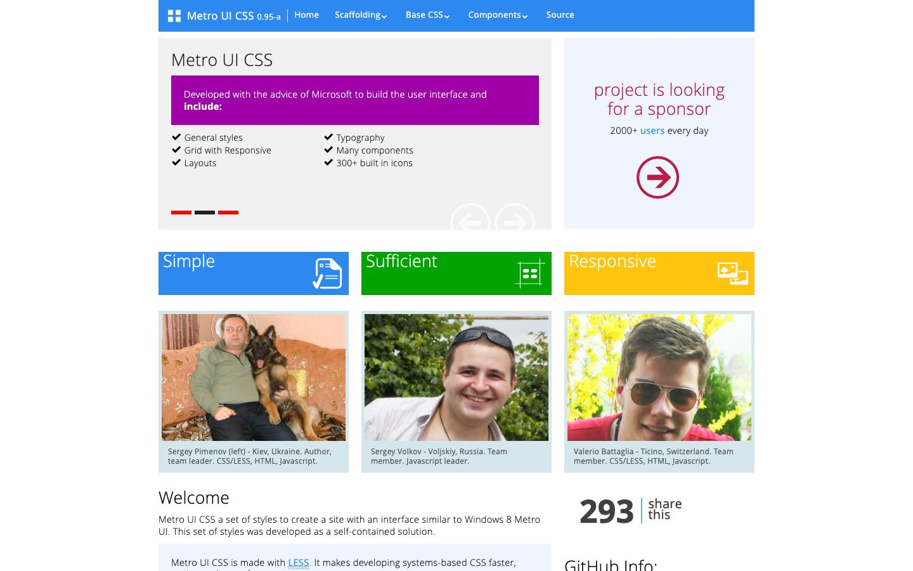

References / Website / 253
Metro UI CSS website, 2013
An open-source CSS framework that rebuilt Windows 8 Metro for the web, shown in its own tiles.
- Source
- metroui.org.ua, Metro UI CSS home page (archived copy)
- Creator
- Sergey Pimenov
- Made
- 2013
- Style
- Flat design (agent-proposed, not yet reviewed by a person)
- Moods
- Bright, systematic, clean
- Evidence
- Captured with
tools/capture.mjs(headless Chrome, 1440 × 900) on 28 September 2026 from the Wayback Machine copy of 23 May 2013, and inspected. The screenshot shows the first viewport; the measurement covers up to four screens. Nothing covers the page. The page shows photographs of the three team members. - Reviewed
- Rights
- Third-party work, stored with credit for commentary. License: unverified. Rights policy
The live site has been redesigned many times since 2013.
Context
The page describes Metro UI CSS as “a set of styles to create a site with an interface similar to Windows 8 Metro UI”. A photo caption names Sergey Pimenov as author and team leader.
The repository olton/metroui was created on 9 March 2012 and is released under the MIT License (GitHub API, read 2026-09-28).
Observed
- A full-width blue bar holds a white four-square logo, “Metro UI CSS 0.95-a”, and white menu words.
- A pale gray panel has the light heading “Metro UI CSS” over a solid magenta bar with white text: “Developed with the advice of Microsoft to build the user interface and include:”. Below it are check-marked features.
- Three short red and black bars mark slide positions. Two thin circled arrows are the slide controls.
- A pale blue panel says “project is looking for a sponsor” in light crimson type, with a crimson circled arrow.
- Three square tiles in blue, green, and yellow have light white titles (Simple, Sufficient, Responsive) and white line icons.
- Team photographs sit on pale blue cards with captions.
Why it belongs
Measured: headings weight 200 (Segoe UI Semilight), no radius, no shadow, no gradient, and 7 hue groups in the screenshot. 47% of boxes have a 1 px border, mostly the pale frames around photographs and panels.
It is a direct translation of the Metro grammar into web components: tiles, light headings, and circled-arrow controls.
Borrow
Build a tile as a solid rectangle with a light title at top left and a one-color glyph at bottom right.
Measured
Machine-extracted by tools/extract-traits.js on . Full measurement.
- Type families
- Segoe UI Semilight (45%), Segoe UI (42%), Segoe UI Light (13%)
- Type scale ratio
- 1.18
- Median radius
- 0 px
- Mean chroma
- 0.06
- Palette
- #ffffff 54%
- #f1f1f1 19%
- #000000 10%
- #d5e7ec 5%
- #2d89ef 4%
- #525252 3%
- #9f00a7 2%
- #00a300 1%

